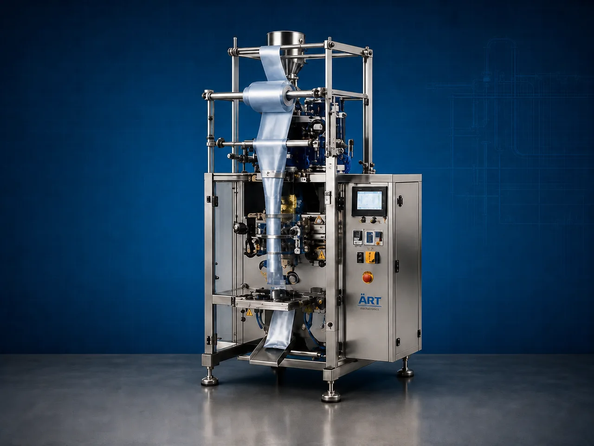

Pillow Pack Packaging Machine (Automatic Pillow Pouch Filling & Sealing System)
A Pillow Pack Packaging Machine, also known as a Pillow Pouch Packing Machine, Center Seal Packaging Machine, VFFS Pillow Pack Machine, or Pillow Bag Filling & Sealing Machine, is an advanced industrial packaging solution designed for automatic pouch forming, film feeding, filling, weighing,…

About the Pillow Pack
Pillow pack packaging systems are widely used for: ✔ Pillow pouch packaging ✔ Center seal pouch packaging ✔ High-speed pouch filling ✔ Powder & granule packaging ✔ Snack food packaging ✔ FMCG packaging lines ✔ Continuous industrial packaging ✔ Retail food packaging
The machine improves: ✔ Packaging speed ✔ Product hygiene ✔ Filling accuracy ✔ Shelf life protection ✔ Packaging consistency ✔ Production efficiency ✔ Packaging appearance
Industrial pillow pack packaging machines use: ✔ Roll film feeding systems ✔ Servo synchronized filling technology ✔ PLC and HMI automation controls ✔ Precision sealing systems ✔ Vertical form fill seal mechanisms
to automatically form, fill, and seal pillow pouches with superior packaging quality and high production efficiency.
Pillow pouch packaging machines are widely used in industries such as:
Pan masala & mouth freshener industries Food processing industries Spice industries FMCG industries Pharmaceutical industries Chemical industries Snack food industries Dry fruits & nuts industries Feed industries
where economical high-speed packaging and reliable sealing quality are essential.
The machine is highly suitable for: ✔ Pan masala packaging ✔ Supari packaging ✔ Snack packaging ✔ Spice packaging ✔ Powder packaging ✔ Granule packaging ✔ Dry fruit packaging ✔ FMCG packaging
ART Mechatronics offers high-performance pillow pack packaging machines, engineered for continuous industrial operation, accurate filling, premium sealing quality, and reliable long-term packaging automation.
Working Principle of Pillow Pack Packaging Machine
- 1. Film Roll Feeding Packaging film roll is loaded into film feeding section.
- 2. Pouch Forming Process Machine forms pillow pouch automatically using forming collar and film pulling systems.
Servo synchronization ensures smooth film movement and accurate pouch formation.
- 3. Product Filling Operation Machine handles: ✔ Powders ✔ Granules ✔ Snacks ✔ Pan masala products ✔ Dry fruits ✔ Pulses ✔ Seeds
accurately and continuously.
- 4. Pouch Sealing Process Machine performs: Vertical sealing Horizontal sealing Heat sealing Airtight sealing Nitrogen flushing (optional)
for hygienic and premium packaging quality.
- 5. Coding & Inspection Integration Optional systems include: Batch coding Date printing QR code printing Metal detection Check weighing
- 6. Finished Pouch Discharge Finished pouches discharged automatically for: Cartoning Retail display Secondary packaging Dispatch operations
Types of Pillow Pack Packaging Machines
- 1. VFFS Pillow Pack Machine Designed for: ✔ High-speed vertical pouch packaging applications
- 2. Center Seal Packaging Machine Suitable for: ✔ Center seal pillow pouch applications
- 3. Snack Pillow Pack Packaging Machine Uses: ✔ Snack and food packaging systems
- 4. Food Grade Pillow Pack Machine Designed for: ✔ Hygienic food and pharmaceutical packaging systems
- 5. Servo Driven Pillow Pack Machine Suitable for: ✔ Precision high-speed pouch packaging operations
- 6. Fully Automatic Pillow Pack Packaging System Designed for: ✔ Complete industrial packaging automation lines
Industries Using Pillow Pack Packaging Machines
🌿 Pan Masala & Mouth Freshener Industry Pan masala, supari, sweet supari, elaichi, and mouth freshener pouch packaging systems. 🌶️ Spice Industry Turmeric, chilli powder, herbs, seasoning, and spice pouch packaging systems. 🍃 Food Processing Industry Snack, namkeen, cereals, grains, pulses, and ingredient packaging systems. 🥜 Dry Fruits & Nuts Industry Almonds, cashews, pistachios, makhana, peanuts, and dry fruit packaging systems. 🛒 FMCG Industry Consumer pillow pouch packaging systems. 💊 Pharmaceutical Industry Nutraceutical and healthcare pouch packaging systems. ⚗️ Chemical Industry Powder and granule chemical pouch packaging systems. 🐶 Feed Industry Animal feed, bird feed, fish feed, and pet food packaging systems.
Features & Advantages
✔ High-speed automatic pouch filling and sealing operation ✔ Economical and efficient packaging solution ✔ Accurate filling and synchronized pouch handling ✔ Supports multiple pillow pouch formats ✔ PLC and servo automation control systems ✔ Improves product shelf life and hygiene ✔ Reduces packaging wastage and labor dependency ✔ Hygienic food-grade construction available ✔ Reliable long-term industrial performance
Technical Highlights
Machine Type: VFFS pillow pack machine Center seal pouch machine Automatic pillow pouch machine Packaging Material: Laminated films Printed packaging films Multi-layer flexible films Filling Integration: Multihead weighers Auger fillers Liquid fillers Cup fillers Features: PLC control system Servo synchronization Touchscreen HMI Nitrogen flushing optional Batch coding integration Sealing Type: Vertical seal Horizontal seal Heat seal Airtight seal Automation: Semi-automatic Fully automatic industrial systems
Turnkey Pillow Pack Packaging Solutions
ART Mechatronics offers: Complete pillow pouch packaging systems Pouch filling and sealing solutions Packaging automation integration systems Conveyor synchronization systems Installation & commissioning After-sales service & AMC
Why Choose Art Mechatronics
Expertise in industrial packaging and automation systems Customized pillow pack packaging solutions for multiple industries High-performance and durable packaging technology Advanced PLC and servo automation systems Proven industrial packaging performance across sectors
Applications
Pan Masala Manufacturing Plants Food Processing Industries Spice Processing Plants Dry Fruit Packaging Units FMCG Packaging Facilities Pharmaceutical Industries
Get pricing & specs for the Pillow Pack
Share the product, target capacity, current process and plant location. These details help our engineers discuss the right machine or line configuration.
One partner, from design to start-up
ART Mechatronics designs, manufactures, installs and commissions your Pillow Pack solution with regional presence in India, UAE and Thailand.